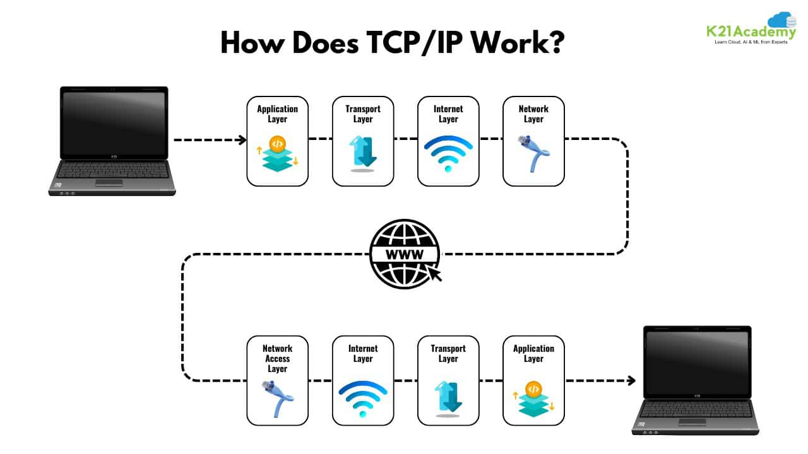

TCP/IP is the foundational suite of communication protocols used to interconnect network devices on the Internet.
Its role is to dictate how data is broken down into smaller packets, addressed, transmitted, routed, and received at its final destination.
